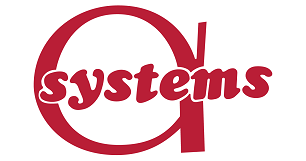
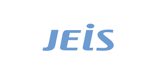
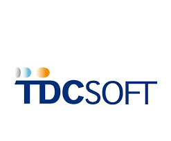
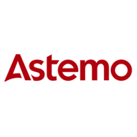
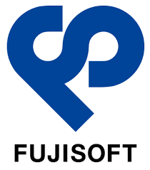

気になる企業
株式会社アルファシステムズ

株式会社アルファシステムズは、ソフトウェアの受託開発をコアビジネスと
しています。通信ネットワーク分野をはじめとして、様々なシステム開発に
参画し、お客様から高い評価を頂いています。お客様のご要望
に沿って、あらゆる開発工程を幅広くサポートいたします。
ことに魅力を感じました。
企業理念
「社会に貢献するために真の発展を目指す企業でありたい。感じた魅力
日本を支える大規模なソフトウェアシステムの開発に携われることに魅力を感じました。
JR東日本情報システム

株式会社JR東日本情報システム 東京都に本社を置く、システムの提案・開発
・運用などを行う企業。 「モバイルSuica」システムやカードシステムをは
じめ、鉄道インフラを支える各種輸送システムの、開発・運用・保守を行う。
企業理念
JR東日本グループのICTをリードする技術集団として、 お客さまの信頼に応え、すべての人の心豊かな生活の実現に貢献します。感じた魅力
駅や町のサービスを中心に行っているため人々の生活に 寄り添うことができる点に魅力を感じた。TDCソフト

主に金融機関向けのシステム開発を行うIT企業。 金融機関の他、エネルギー、
製造メーカー、通信キャリア、官公庁など幅広い業界にシステム企画・設計・
開発・保守 などサービスを提供している。
企業理念
最新の情報技術を提供しお客様の繁栄に寄与するとともに 社員の生きがいを大切にし社会とともに発展することを目指します。感じた魅力
顧客起点のスタンスをとっていることから、お客様の真の ニーズを知り満足するサービスを提供できる点。日立Astemo仙台

仙台市にを拠点に活動している会社。
4輪車・2輪車向けエンジン制御・車体制御システム用ソフトウェアの開発を行っている。
企業理念
安全と健康を守ることは全てに優先する」という永続的 な基本理念のもと、「安全衛生に妥協なし」の信念を持ち、すべての従業員が 安心していきいきと働くことができる「安全・快適で健康な職場づくり」に取 り組みます。感じた魅力
車・バイクのECU（電子制御ユニット）の開発を行っ ていて最新の技術に触れながらソフトウェア開発ができることに魅力を感じたから。富士ソフト

富士ソフトは1970年に設立された独立系の大手システムインテグレーターです。
横浜を拠点として、通信インフラや社会インフラ、機械制御などの組み込み系ソ
フトウェア開発のほか、業務系ソフトウェア開発やネットビジネスソリューショ
ンなど幅広くシステム開発を行っています。